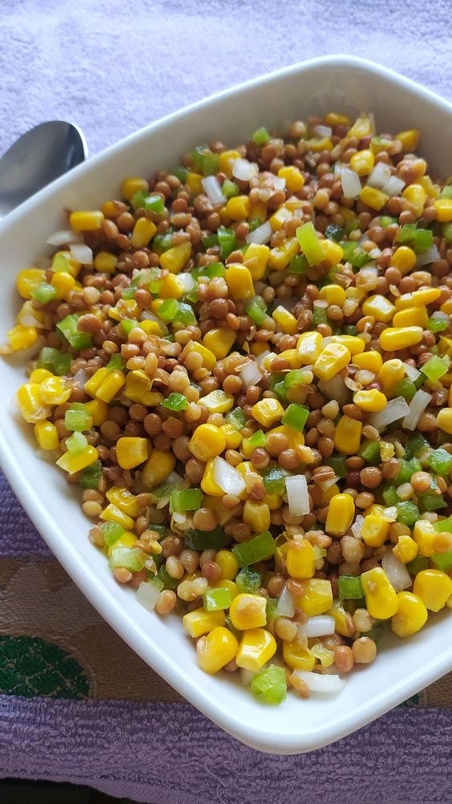
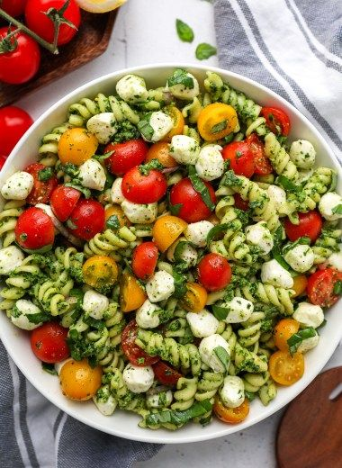
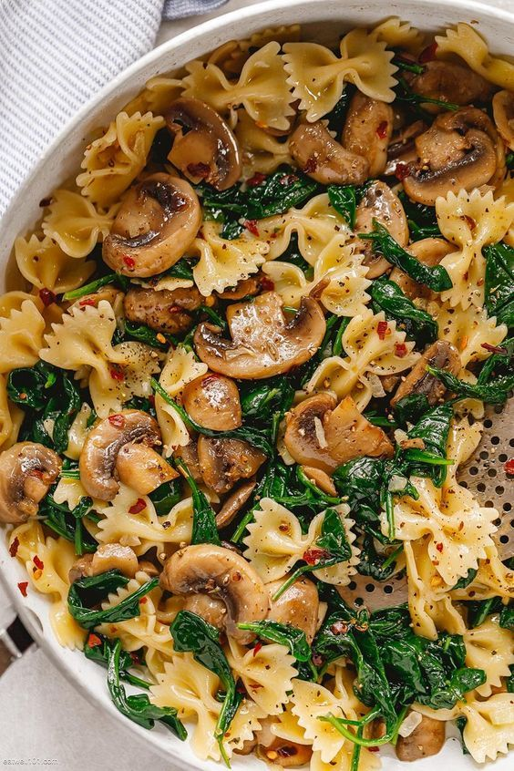
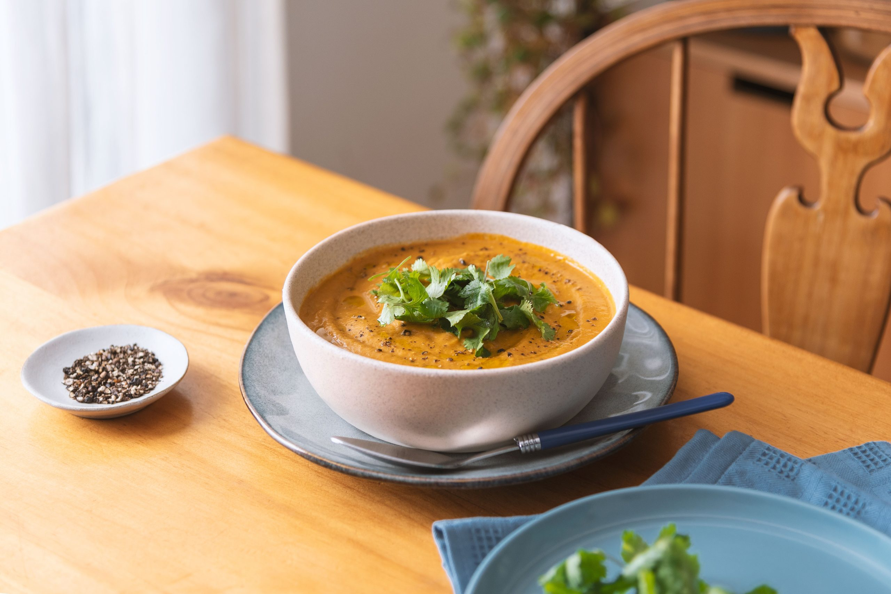

×
Funcion temporalmente fuera de servicio.
Aceptar
Q'RICO
Inicio
Postres
Comidas
Contacto
Inicio Sesión



Almuerzos
Crema de vegetales asados

Ensalada de Quinoa
Ingredientes
Tallos de 1 brócoli
Tallos de 1 acelga
2 cebollas
Tallos de cilantro fresco
Despuntes de 3 pimentones
2 dientes de ajo
Aceite de oliva
Sal y pimienta
Preparacion
Corta los vegetales y condiméntalos. Hornea a 200ºC durante 20 minutos.
Hervir la quinoa en agua con sal.
Procesa los vegetales con cilantro, jengibre y ajo.
Calienta los vegetales procesados en una olla, añadiendo agua o caldo si es necesario.
Sirve en un plato y añade pimienta y hojas verdes.